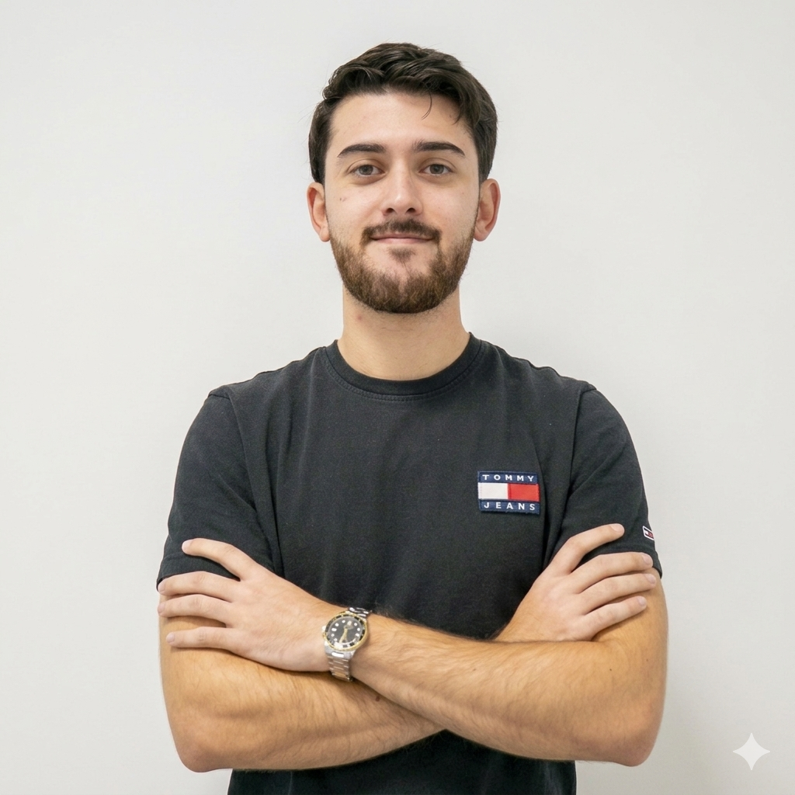

Initial Prologue
I feel like resumes are the corporate world's equivalent of dating app profiles.
You write wonderful things about yourself, pretending you're such an interesting and useful human being,
waiting for someone naive enough to believe it.
Jokes aside, writing a resume is, for me, an interesting, nostalgic exercise in trying to find the most
interesting and useful insights from the work I've been doing over the past few years.
Therefore, trust me when I say it was quite amusing (but also challenging) to concatenate
my professional history into such a small text.
Miguel Marombal's Resume (yeah, that's me)

Professional Experience
Embedded Software Engineer | BOSCH
2024 - present · Braga, Portugal
- Developing safety-critical software components for an Airbag ECU (ISO 26262 ASIL-D), implementing MCAL drivers within an AUTOSAR layered architecture to interface with system ASICs via SPI.
- Performing the full ASPICE development lifecycle—from requirement derivation to detailed design—ensuring strict adherence to MISRA C and CERT C coding standards for all safety-critical implementations.
- Performing unit and integration testing using VectorCAST to achieve high code coverage, ensuring full traceability between system requirements and validated implementation.
- Developing pure::variants pvSCL code to automate configuration and code generation processes.
Research Grant | INESC TEC - Instituto de Engenharia de Sistemas e Computadores, Tecnologia e Ciência
2022 - 2024 · Porto, Portugal
- Developed the master thesis "Robotic System for Reproducible Mobile Experimentation in Anechoic Chambers". Consisting in the development of a framework to control a UR robotic arm using ROS and MoveIt Framework to position a 5G Base Station. Integrated the robotic system with Network Simulator 3 (ns-3) using C++ and MQTT enabling the system's Digital Twin.
- Oriented 3 students in the CTM Summer Internship that lead to a Python and YOLO based "Framework for the Obstacle-aware Positioning of a Mobile Robotic Platform in 6G Networks".
Education
Master of Electrical and Computer Engineering
FEUP — University of Porto · 2022 - 2024 · Grade: 18/20
ERASMUS+ Exchange Student
University of Zagreb, Faculty of EE and Computing · 2023 - 2024 · Grade: 4.5/5.0
Bachelor of Electrical and Computer Engineering
FEUP — University of Porto · 2019 - 2022 · Grade: 16/20
Academic Projects
Heuristic Algorithm for the Vehicle Routing Problem with Time Windows (VRPTW)
2024 · Heuristic Optimization Methods
- Implemented in Python a hybrid algorithm combining Tabu Search, Simulated Annealing, and Destroy & Repair strategies to solve the Solomon Benchmarking Dataset assessment.
Storytelling Robot for User Interaction
2024 · Human-Robot Interaction
- Developed, in collaboration with 2 students, a minimalistic storytelling robot intended to gaze and interact with users.
- Employed real-time YOLO computer vision using Python to detect user presence and position in under 500 ms.
- Programmed a Raspberry Pi Pico in C to control servo motors enabling gaze and interaction movements.
Contactless Light Switch and Dimmer
2023 · Systems Engineering
- Designed and developed a contactless light switch and dimmer controlled by sound and hand gestures, as Assistant Team Leader in a team of 10.
- Implemented a low-cost electret microphone, a Time-of-Flight (ToF) sensor, and a Raspberry Pi Pico programmed in C/C++.
- Successfully completed the product with a total budget under 80€.
Music Organizer Software
2023 · Software Design
- Designed and developed a Music Organizer in JAVA to manage and reproduce playlists with a team of 3 students.
- Applied OOP concepts, UML diagrams, and established Design Patterns for scalability and maintainability.
- Integrated with a PostgreSQL relational database to manage users' music metadata and playlists.
- Source Code -> github.com/Marombal/SoftwareDesign-MEEC
Wall-Following Robot
2023 · Embedded Computing Architectures
- Developed a wall-following robot using a Raspberry Pi Pico programmed in C/C++ as the control unit.
- Equipped with Time-of-Flight (ToF) sensors to detect and maintain a set distance from walls, and DC motors for movement.
- Source Code -> github.com/Marombal/EmbeddedComputingArchitectures_FinalProject-MEEC
Machine Learning for Object Detection and Identification
2023 · Machine Learning
- Applied Kalman Filters to estimate a mobile robot's position from velocity and position measurements.
- Used linear regression with Ridge and Lasso techniques to construct an environment map from 2D Lidar data.
- Implemented clustering, k-NN, and ANN methods for object classification and identification in robotic environments.
Object Sorting Demonstrator based on Computer Vision and RFID
2022 · Capstone Project
- Collaborated in a team of 6 students to develop a demonstrator capable of sorting objects by shape and color using CV, RFID, and a Robotic Arm.
- Source Code -> github.com/Marombal/Capstone-Project-LEEC
Skills
Programming Languages
C/C++, Python, Java, Matlab/Octave
Databases
SQL (PostgreSQL), NoSQL (MongoDB)
Communication Protocols
UART, SPI, I2C, CAN, OPC-UA, Modbus, LoRa, MQTT, TCP/IP
Software Frameworks & DevOps
GNU/Linux, CI/CD (Git, RTC), ROS, FreeRTOS
Languages
Portuguese (native) · English (fluent)
Hobbies, Challenges and Non-tecnhical Activities
Representative — Mostra U.Porto
2023 - 2024
- Represented FEUP's Department of ECE and INESC TEC's Center of Telecommunications and Multimedia at Mostra U.Porto, an annual event inspiring younger students by showcasing academic and research opportunities.
Football Player — CD Trofense
2010 - 2017
- Played as goalkeeper for CD Trofense for 7 years.